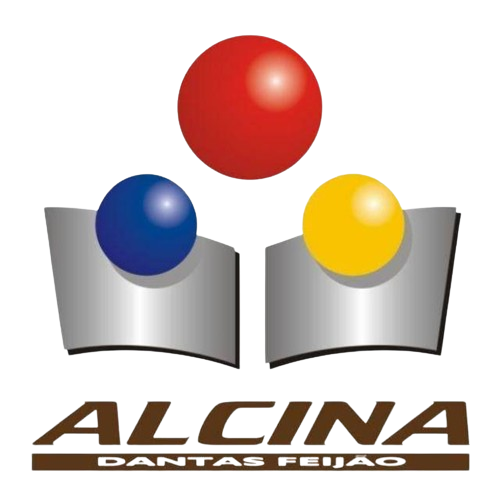

EME Alcina dantas feijão

Meu
Portifolio
Meu nome é João Gabriel
Hard skills
Dominío de Html
Edição de imagens
Gestão de projetos
Soft skills
Gereciamento de tempo
Comunicação
Paciência
|
|
|
|
|
|
|
|
|
|
|
|
|
|
|
Nos primeiros anos da minha carreira, meu foco estará dedicado ao aprimoramento
das habilidades em linguagens de programação relevantes. Após esse período inicial
pretendo direcionar meus esforços para a especialização em uma área específica dentro
do vasto campo da programação.
A partir do quinto ano em diante, minha meta é ascender a cargos de maior responsabilidade e liderança dentro da empresa em que estiver atuando. Este plano delineado reflete meu
compromisso com o contínuo desenvolvimento profissional e crescimento dentro do setor de tecnologia da informação.